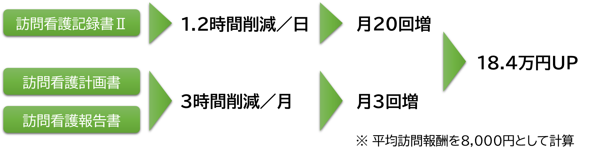
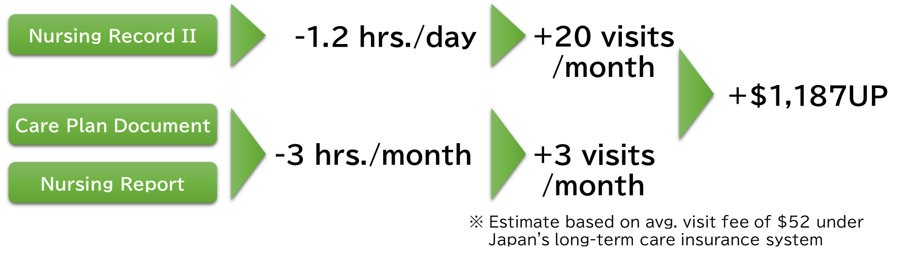
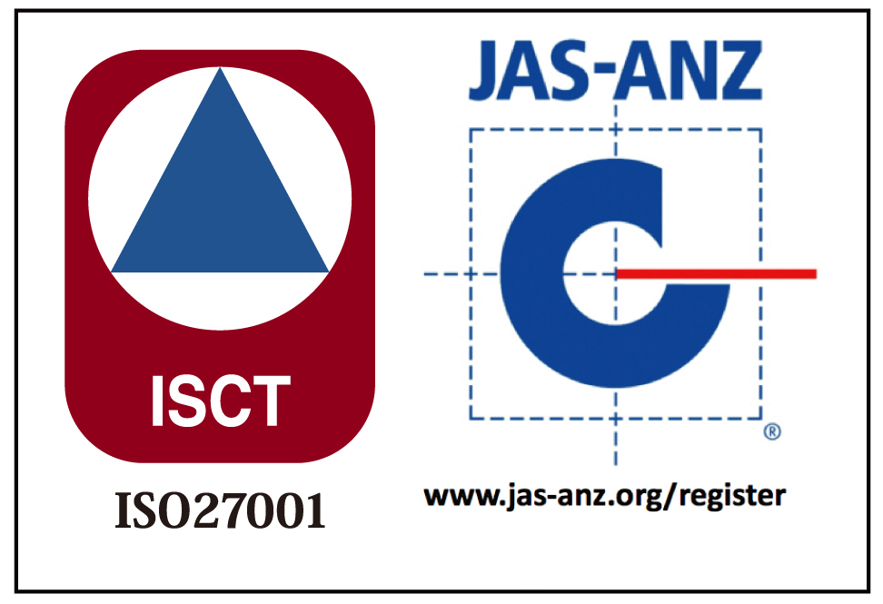
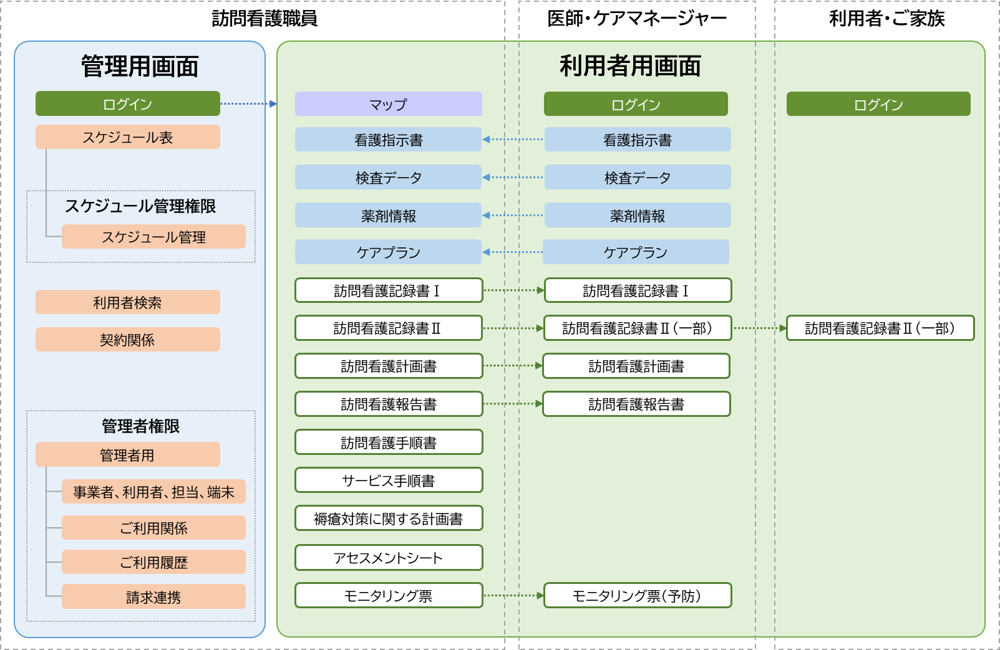
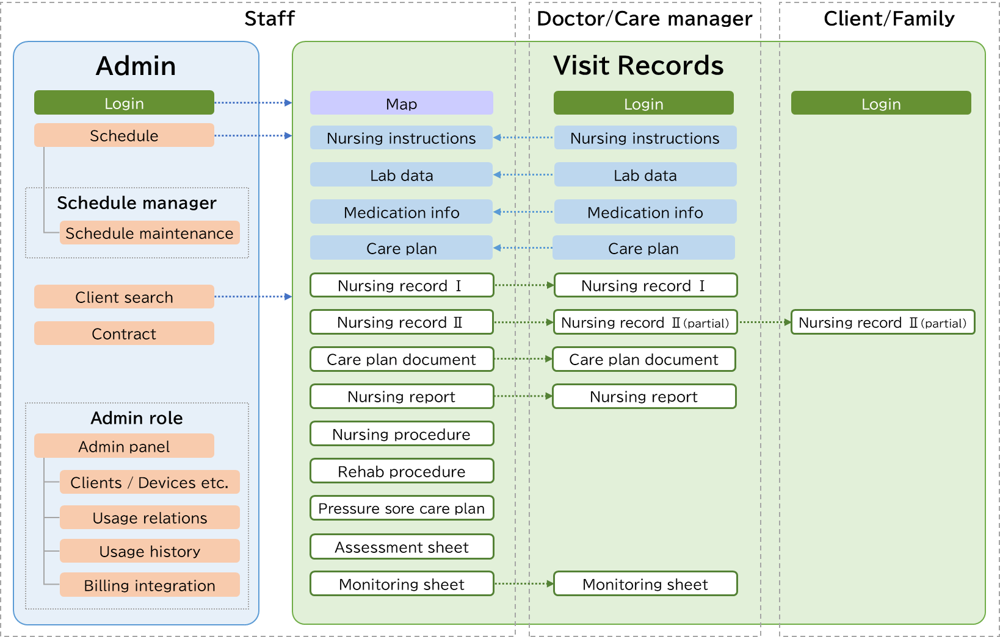

訪問看護・介護をAI支援Visiting Nursing & Care,Powered by AI
作成する数多くの帳票を自動生成することで訪問時間を増やし、事業者の利益と職員の処遇を向上します。Automatically generate clinical documents to increase visit time, boost provider revenue, and improve staff compensation.
生成AIで業務を削減
記録書・計画書・報告書をAIが自動作成。職員の記録時間を大幅に減らします。
見守りAIで質を改善
5つのバイタルを同時に見て変化に早く気づき、関係者みんなで見守ります。
営業で利益を増加
依頼者との連携・空き状況の共有で紹介を増やし、事業所の利益につなげます。
生成AIで職員の業務を大幅に効率化Dramatically Reduce Staff Workload with Generative AI
記録書・報告書を自動作成。職員の記録負担を大幅に削減します。Auto-generate clinical notes and reports — significantly cutting the documentation burden for your staff.
生成AIを使ったシステム構成
ケアプランや指示書などの情報をもとに、赤い流れ＝生成AIが各帳票を自動で作成・連携します。
前回訪問の記録と当日の実施内容を入力するだけで、生成AIがS.O.A.P形式で自動作成。修正するだけで記録業務を大幅に削減できます。Enter previous visit notes and today's activities — the AI drafts a complete S.O.A.P record. Just review and submit to dramatically cut documentation time.
1カ月間の記録書・ケアプラン・サービス提供書から自動生成。事業所内業務を大幅に削減します。Auto-generated from a month's records, care plans, and service logs — dramatically reducing back-office paperwork.
訪問回数の増加で
職員1人あたりの月間報酬が増加しますMore Visits = Higher Monthly Revenue
Per Staff Member


訪問看護・介護向けクラウド型電子カルテCloud-Based EMR for Home Nursing & Care
他のシステムとのCSVファイル・API連携に対応。スムーズな導入と業務フローの維持を実現します。Supports CSV and API integration with existing systems for seamless onboarding without disrupting your workflows.

Licence No. ISMS/0393

5つのバイタルを“同時”に見て、
変化を見逃さない。
人が一度に見比べられるのは2つくらいまで。Mintimeが独自開発した「統計AI」が、血圧（上・下）・脈拍・体温・SpO2 の5つを同時に解析。1つずつ見ていては気づけない“全体の変化”を捉えて、医師・ケアマネージャー・ご家族に届けます。
5つのバイタルを“同時”に見る
1つの値は正常でも、全体のバランスの崩れとして変化を捉えます。
変化は「予兆」として現れる
一見ふつうに見える値でも、異常値として早期に可視化。“急変”の前に気づけます。
捉えた“変化”は、医師・ケアマネージャー・ご家族と共有。
1人では気づけない変化も、関係者みんなで見守ることで見逃しません。
ケアプランデータ連携システムに対応Supports the Care Plan Data Linkage System
厚生労働省・国民健康保険中央会が推進する「ケアプランデータ連携システム」に対応。居宅介護支援事業所（ケアマネージャー）とサービス提供事業所の間で、居宅サービス計画書やサービス利用票をCSVで安全・正確にやり取りでき、FAXや手入力の手間を大幅に削減します。 Mintime supports Japan's national Care Plan Data Linkage System. Care plans and service usage sheets are exchanged as CSV between care managers and service providers — securely and accurately — eliminating fax and manual re-entry.
ベンダ試験の完了結果Vendor Test Completion
公益社団法人 国民健康保険中央会が実施する「ケアプランデータ連携システム」のベンダ試験（標準仕様V4）を完了しました。Mintime has completed the vendor test (Standard Specification V4) for the Care Plan Data Linkage System conducted by the National Health Insurance Central Association (Kokuho-Chuokai).
✓ ベンダ試験（標準仕様V4）完了 ／ 2026年8月Vendor Test (V4) Completed / Aug 2026「ケアプランデータ連携システム」対応表Compatibility Table
凡例：○ 対応可 ／ × 非対応 ／ ― 対象外Legend: ○ Supported / × Not supported / ― Not applicable
Mintimeは居宅サービス事業所（訪問看護ステーション）向けのため、下表の「居宅サービス事業所向け」列が該当します。ケアマネージャーから計画書・利用票（予定）を取込み、サービス提供実績を出力します。（※削除機能は任意のため割愛）Mintime is designed for home-service providers (visiting nursing stations), so the "For Home-Service Provider" columns below apply. It imports care plans and service usage sheets (planned) from care managers, and exports service delivery results. (The deletion function is optional and is omitted here.)
＜居宅介護支援＞＜Home Care Support＞
| ケアプランデータ種別Care Plan Data Type | 居宅介護支援 事業所向けFor Care Mgmt Office | 居宅サービス 事業所向けFor Home Service Provider | ||
|---|---|---|---|---|
| 出力Export | 取込Import | 出力Export | 取込Import | |
| 利用者補足情報Client Supplementary Info | × | ― | ― | ○ |
| 第1表 居宅サービス計画1表Table 1: Care Plan (1) | × | ― | ― | ○ |
| 第2表 居宅サービス計画2表Table 2: Care Plan (2) | × | ― | ― | ○ |
| 第3表 居宅サービス計画3表Table 3: Care Plan (3) | × | ― | ― | ○ |
| 第6表（サービス利用票）予定Table 6: Usage Sheet (Plan) | × | ― | ― | ○ |
| 第6表（サービス利用票）実績情報Table 6: Usage Sheet (Result) | ― | × | ○ | ― |
| 第7表（サービス利用票別表）Table 7: Usage Sheet Appendix | × | ― | ― | ○ |
＜介護予防支援＞＜Preventive Care Support＞
| ケアプランデータ種別Care Plan Data Type | 地域包括支援 センター向けFor Community Support Ctr | 居宅介護支援 事業所向けFor Care Mgmt Office | 居宅サービス 事業所向けFor Home Service Provider | |||
|---|---|---|---|---|---|---|
| 出力Export | 取込Import | 出力Export | 取込Import | 出力Export | 取込Import | |
| 利用者基本情報Client Basic Info | × | × | × | × | ― | ○ |
| 利用者補足情報Client Supplementary Info | × | × | × | × | ― | ○ |
| 介護予防サービス・支援計画書Preventive Care Plan | × | × | × | × | ― | ○ |
| サービス利用票（予定情報）Usage Sheet (Plan) | × | ― | × | ― | ― | ○ |
| サービス利用票（実績情報）Usage Sheet (Result) | ― | × | × | × | ○ | ― |
| サービス利用票別表Usage Sheet Appendix | × | × | × | ― | ― | ○ |
データ連携方法How Data Linkage Works
Mintimeの管理画面「提供票取込（基本訪問パターン登録）」から、ケアプランデータ連携システムを通じてサービス提供票をやり取りします。From Mintime's "Service Sheet Import" screen, service sheets are exchanged through the Care Plan Data Linkage System.
🏥 サービス提供事業所（Mintime）Service Provider (Mintime)
提供票（予定）取込Import Service Sheet (Plan) 提供票（実績）出力Export Service Sheet (Result)🏢 居宅介護支援事業所Care Manager Office
提供票（予定）出力Export Service Sheet (Plan) 提供票（実績）取込Import Service Sheet (Result)ケアマネージャー（居宅介護支援事業所）が出力した提供票（予定）をMintimeが取込み、訪問実績を提供票（実績）として出力してケアマネージャーへ返します。電子証明書による安全な通信で、FAXや再入力なしにデータが連携されます。Mintime imports the Service Sheet (Plan) exported by the care manager, then exports visit results as a Service Sheet (Result) back to the care manager. Data is exchanged securely via digital certificates — no fax or re-entry required.
お問い合わせ先Contact
ケアプランデータ連携に関するお問い合わせ：For inquiries about care plan data linkage: info@mintime.co.jp（株式会社Mintime） (Mintime, Inc.)
「統計AI」とはWhat is "Statistical AI"?
多くのデータの相関関係を一瞬で計算・数値化できる弊社独自技術。従来手法より高感度で、分かりやすいグラフ表示が特徴です。「急変みまもりAI」の基幹技術として活用されています。Our proprietary technology instantly calculates and quantifies correlations across large datasets. More sensitive than conventional methods, with clear visual graphs — the core engine powering Early Alert AI.
よくあるご質問Frequently Asked Questions
お問い合わせContact Us
info@mintime.co.jp